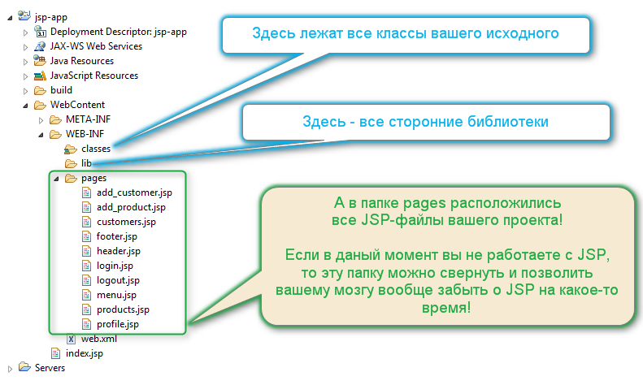

Нет, ребята! Нет! Нет! Нет!
Вы что, прочитали
предыдущую ошибку
и просто перетащили JSP-файлы в папку WEB-INF?
Вы на самом деле, сделали так, как было вот на этом рисунке?

Ну посмотрите еще раз внимательнее — я же специально напихал туда 10 JSP-страниц + еще одну индексную. А в реальном проекте таких страниц у вас будут сотни!
И самое главное, что кроме JSP страниц, в каталог WEB-INF вам придется положить еще:
И еще кучу чего другого!
А теперь проговорив все это про себя, еще раз внимательно посмотрите на рисунок.
Вам легко найти на нем файл web.xml?
Ну конечно легко!
Ведь сейчас там только 10 страниц, и все они обведены зеленым ободком.
Но, еще раз:
В настоящем проекте у вас не будет зеленого ободка, а вместо этого будут сотни различных файлов в каталоге WEB-INF!
Неужели вам будет легко найти нужные файлы в этом хаосе?
Неужели вы захотите тратить по пол минуты на скроллирование дерева проекта, просто для того,
чтобы добраться вниз каталога и посмотреть на web.xml?
Да чего ты орешь, чувак? Какая картинка, какой ободок? Я и картинку эту вижу в первый раз, и тебя, истеричку, в первый раз слышу!
отвечаете вы, как бы намекая, что никаких рисунков вы ранее не смотрели и ни одной ошибки по JSP еще не читали. Но ведь это еще хуже получается! Ведь те, кто пришел сюда после первой ошибки, они хотя бы (намеренно с моей стороны) были введены в заблуждение. А вы же, получается, самостоятельно приняли решение
небрежно швырнуть все JSP-файлы в WEB-INF, как продавец в советской столовке швыряет тарелку с вторым
на поднос!
Типа — кушайте, не обляпайтесь! Друзья, ну это же не первая ваша работа... И уже, наверное, не десятая. Ведь вы уже слышали ни один раз, вот это вот занудное:
cssИ так далее, и так далее, и так далее, и так без конца! Вас от этого занудства уже должно тошнить. И вот вы становитесь серьезным программистом, которому доступна вся мощь технологии Java Server Pages, и вновь повторяете ту же детскую ошибку! Ну как так-то?
Мне больше нечего сказать, кроме непечатных слов, ибо нахожусь я в высшей степени возмущения.
Перейдем лучше к выводам
Всегда создавайте отдельную папку к каталоге WEB-INF для JSP-файлов своего приложения!
Тогда рисунок с правильной структурой приложения будет выглядеть вот так:

На рисунке выше вы можете видеть, что все JSP-страницы своего приложения я сложил в каталог, который называется pages.
Вы должны понимать, что имя этого каталога может быть абсолютно любым.
Однако есть некоторые устоявшиеся (традиционные) названия для папки с JSP-страницами.
Кроме имени pages, я в разные времена видел вот такие названия:
| Название | Что означает? |
|---|---|
| views | представления |
| jsp | даже не знаю, что сказать |
| jsps | даже не знаю, что сказать во множественном числе |
| ui | пользовательcкий интерфейс |
Мне больше всего нравятся имена pages или jsp, но это мое личное мнение.
Вы для своей папки можете подобрать любое имя, главное, чтобы оно ясно давало понять:
В ЭТОЙ ПАПКЕ ЛЕЖАТ JSP-СТРАНИЦЫ МОЕГО ПРИЛОЖЕНИЯ!
Вот и все. Давайте поскорее исправим это досадное недоразумение, притворимся, что его вообще не было и перейдем к другим, более Enterprise-внушительным штуковинам.
Но все же, во время этого стремительного перехода к более Enterprise-внушительным штуковинам, покрутите еще раз у себя в голове фразы
Одна папка для всех JSP-страниц
и У вас будут сотни и тысячи JSP-страниц
, и задумайтесь на секунду:
А не пиз***т ли мне этот джентельмен в очередной раз
 ?
?
Нет? Не возникло такой мысли? Ну, ok, давайте тогда пока что переходите к Enterprise-штуковинам